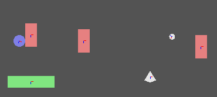

physics_world_draw_debug(flag)
| Argument | La description |
|---|---|
| flag | La valeur de l'indicateur pour afficher différentes fonctionnalités de débogage |
Retours: N / A
Cette fonction va dessiner une représentation du système physique de la pièce pour aider au débogage lorsque vous avez du mal à faire fonctionner la scène physique. Parfois, le problème peut être dans la partie de rendu de votre jeu, par exemple un sprite peut être dessiné à la mauvaise position ou rotation, donnant l'apparence d'une physique incorrecte, ou il se peut que vos calculs ne soient pas corrects. Quoi qu'il en soit, cette fonction vous aidera à trouver et à résoudre le problème en dessinant ce qui se passe dans votre système physique. Pour ce faire, vous devez indiquer quelle partie du système dessiner, et ceci en passant une valeur créée à partir des bits stockés dans différentes constantes "flag":
| Argument | La description |
|---|---|
| phy_debug_render_aabb | Ceci montre la boîte de délimitation absolue de chaque luminaire par rapport à l'axe de la pièce |
| phy_debug_render_collision_pairs | Cela montrera tous les appareils qui sont actuellement en collision |
| phy_debug_render_coms | Ceci marque le centre de masse de chaque luminaire dans la pièce |
| phy_debug_render_core_shapes | Affiche les formes de base qui composent les appareils dans la pièce |
| phy_debug_render_joints | Cela va dessiner chacune des articulations de tous les appareils dans la pièce |
| phy_debug_render_obb | Cela montre la boîte de délimitation relative pour les appareils dans la pièce |
| phy_debug_render_shapes | Cela montre les formes réelles qui composent les appareils dans la pièce |
Donc, pour dessiner deux de ces options, nous aurions besoin de faire un "ou" (dans GameMaker Studio 2 ceci est représenté par |) sur les deux et stocker la variable résultante pour la fonction à utiliser. Voici un exemple de définition d'une variable à utiliser avec la fonction qui dessine uniquement les centres de masse et les articulations de tous les appareils d'une pièce:
flag = phy_debug_render_coms | phy_debug_render_shapes
Ce qui vous donnerait quelque chose comme ceci:

Comme vous pouvez le voir avec le code ci-dessus, seules les formes et centres de masse sont dessinés à l'écran (ainsi que les couleurs représentant leurs états - pour plus d'informations, veuillez consulter la documentation Box 2D en ligne). De la même manière, vous pouvez afficher plus, voire toutes, les constantes que vous souhaitez déboguer... Juste "ou" tous ensemble! Une autre chose est à noter: cette fonction doit être appelée uniquement dans l'événement draw d'une instance dont la profondeur est inférieure à celle que vous souhaitez déboguer, sinon vous ne pourrez pas voir les informations de débogage.
flag = phy_debug_render_aabb |
phy_debug_render_collision_pairs | phy_debug_render_obb;
physics_world_draw_debug(flag);
Le code ci-dessus va dessiner toutes les boîtes de délimitation absolues, les boîtes de délimitation relatives ainsi que les appareils en collision dans le système physique actuel.